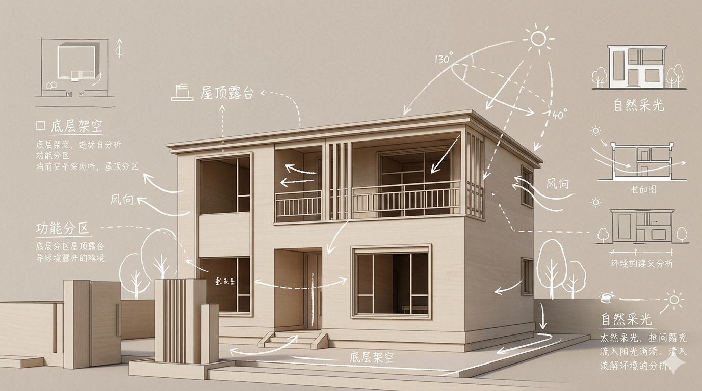

UNIT TECHNOLOGY | 单元集成技术
以工业化、绿色化、数字化，
引领乡村住房新标准。
博笛智家是凯昆科技集团旗下的住宅品牌，中国领先的单元集成住宅制造企业。
通过自研的智能工业化产线，打造建筑工业化住宅产品 BODHIMIC。
我们拥有来自各学科的硕博士研发团队，深耕单元建筑的核心技术，
为您创造可持续价值的“好房子”。
即使时间流逝，住宅的价值持续存在，提供让您安心舒适生活超过60年的绿色低碳住宅。

的核心优势
BODHI MIC 是由设计师精心设计的房子，他们利用“经验”和“专业”精心打造的理想住宅。
从设想到建造结束，五大优势保证了交付一套有生活的房子。
所见即所得
时间大幅节省
性能与品质
容易找到买家
更清晰


四步就诞生了
基于精心挑选的计划，选择过程充满乐趣，与家人一起。
相比建造定制房屋，会议次数更少，建房也更简单顺畅。
这取决于你自己。

Yosemune / 平也
不知不觉家人聚集，
为客厅增加免费空间。
在明亮的LDK朝南，有一个宽敞的多角区域，家庭可以
在这里享受自由创意。
有了充足的储物空间，你可以过上美好舒适的生活。


基本信息 Basic Information

Kirizuma / 切妻
动静分离的设计，
享受私密的二层时光。
将主要的社交功能区集中于首层，
二层则作为绝对的私密休息区。
通过挑空设计，让一二层的空气与光线自由流转。


基本信息 Basic Information

Kata-nagare / 片流
挑高宽敞的客厅，
沐浴充足的自然光。
利用单坡屋顶的优势，打造极具震撼力的挑高客厅。
即使在狭长的地块上，
也能保证室内的通透与采光。


基本信息 Basic Information

Rikuyane / 陆屋根
专属的顶层露台，
延伸家庭户外边界。
平屋顶设计不仅带来现代简约的外观，
更开辟出宽阔的屋顶露台。
在这里进行烧烤、派对或家庭天文观测。
基本信息 Basic Information

Hiraya / 平屋
无障碍的生活动线，
庭院与居住的融合。
将所有生活机能集中于单层空间，
极致流畅的水平生活动线。
无论对老人还是孩子，都是最安心的选择。
基本信息 Basic Information

用你喜欢的外观印象
基于单色系，整体建筑的
色系。如外墙、排水沟、檐口和入口门廊，协调一致，营造出美丽的印象。
耐候性和防污也是保持美丽的关键因素。
它的设计非常适合路上的乘客。
四套单调服装

单调浅米色

单调深棕色

单调深灰

单调的繁杂点缀

质朴
有点粗犷，但不娇揉造作

自然
木头的温暖是温暖的
北欧
柔软和极简的生活

现代
沉稳与洗练的都会质感
体现”个性化“
的4种风格
LDK的室内风格，
通过选择喜欢的颜色或材质。
搭配室内色系，
享受家具、照明的生活气息。


Style Select Kitchen | kitchenhouse
与kitchenhouse的合作，仅限特定的方案。
提供独家的风格定制厨房双色系选择。
体现”个性化“的
3种厨房
LDK的室内风格，
希望通过家人喜欢的颜色或材质来选择。
匹配包裹整个空间的室内色系，
还可以享受家具、照明、艺术品的生活气息。

精益求精的细节
定制您的专属生活
从极致的收纳空间到考究的材质选择，
我们提供全方位的定制化服务。
根据家庭的生活习惯与动线规划，
为您打造兼具美感与实用性的专属功能区。

定制收纳空间
Maximize your lifestyle
更懂生活的
智慧房屋
不仅仅是设备堆叠，让房屋充满智慧。
搭载 Home AI Core 家庭私有算力中枢，
端侧运行 130 亿参数大模型。
从环境光实时调节到睡眠温控算法，
让设备系统的联动，无缝融入日常起居。

1315 种设备全屋联动
Seamless Integration

实现零能耗房屋
实现零能耗房屋（ZEH）的重点是：
“产生能源”、“节能用电”和“房屋隔热性能”。
通过屋顶高效太阳能光伏板产生清洁能源，
配合博笛智家高标准的单元结构隔热性能与智能蓄电池，
大幅削减家庭整体能源消耗量，迈向可持续的未来生活。
四季如春的温控体验
摒弃传统空调的局部冷热不均，
采用全屋隐蔽式辐射供暖与柔性制冷系统。
无论室外严寒酷暑，室内始终保持在最适宜人体感知的恒定温度。
无风感、无噪音，为家人营造极致舒适的安居环境。


不仅仅是设备堆叠
让房屋充满智慧
基于 Home AI Core 家庭私有算力中枢，端侧运行 130亿 参数大模型。
智能家居是让设备系统的联动真正融入生活：
学习灯光、环境光窗帘实时调节为护眼状态；
1315 种设备无缝联动，全屋电器一声令下，即可响应。

从源头呵护健康
前置过滤、中央净水、中央软水到末端直饮。
构建全方位立体的家庭水生态系统。
软水洗浴呵护肌肤与衣物，净水直饮保障饮食安全。
有效去除水垢，延长全屋高端涉水家电的使用寿命。

呼吸森林般的纯净
搭载医疗级高效HEPA滤网的智能新风系统，
7x24小时不间断进行室内外空气置换。
有效阻挡PM2.5、花粉、微尘及过敏原进入室内，
并自动调节送风温湿度，让家时刻保持清新富氧状态。

将您对博笛房屋的信任，
融入到房屋的性能与技术中。
隐藏在设计和内部装饰之下的东西。
耐震性没问题吗，省电的性能・设备如何。
对未来的保障，以及出售时的价值还在吗。
以与博笛定制住宅相同的基础性能，
提供长久舒适的居住环境。